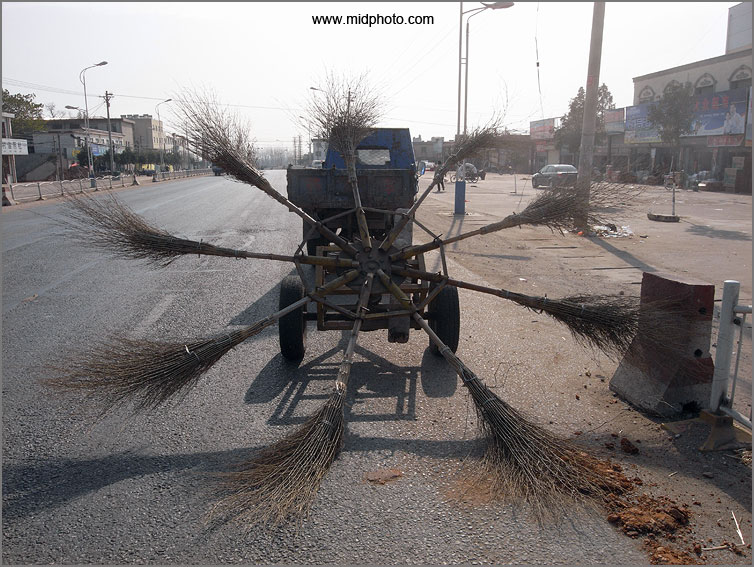

老杨急就章系列（6）
在垃圾中奋勇挖掘
by 长沙杨飞
前天在湖大摄影QQ群跟同学们讨论翻墙，我说谷歌搜索和维基百科上不了，基本就断了我们的左膀右臂，尤其是科研工作。群里有个师大的同学不同意，他说有时候百度百科比维基百科还强些。他举了“电子竞技”的例子。
我一看，确实百度百科对电子竞技的解释比中文维基百科详细。但是这位同学可能没有看英文维基百科eSports词条。这么说吧，百度百科只有在后面吃灰的份，如果和维基eSports比的话。
我对同学们的劝告是，任何专业和研究，都不要局限在中文圈子里，要瞄准世界顶尖水平。以摄影为例，作为摄影师，我基本不看国内的摄影器材评测，因为这里90%都是枪文和软文。英文的www.dpreview.com 以及www.imaging-resource.com
已经树立了影像网站的行业标准，国内的中文网都在后面吃灰，不看也罢。
还有一个同学说，没有谷歌学术搜索并没有很大的问题，我们有知网。我一听就笑了。知网乃是地球最大学术垃圾场。在一堆垃圾里面扒来扒去会有啥收获？
我说这话可能有点过。京剧、二胡和琵琶研究，可能知网比较强。另外，国外的东西并不都是精华，那里垃圾也不少，而国内的垃圾场有时候也能扒点精华出来，但是究其比例来说，我们毫无疑问应该少浏览知网，多上谷歌学术，那才是全球科研大本营。说到学术，我们还是少提百度和知网为好，以免让人笑话。
那么问题来了，由于众所周知的原因，谷歌搜索和（中文）维基百科404
了。怎么办呢？这里我对同学们有两个期望，一是熟练掌握翻墙本领，手机和电脑都必翻。一个月花十几块钱买个VPN或者VPS账号不算啥，诸位每个月花在吃喝玩乐上的钱不差这一点。我正在写《老杨的科学上网快速指南》，下周发上来。
第二个期望是熟练掌握英文。基本要求是能阅读英文网站和报刊，至少本专业的英文要如此。如果一定要说个数量标准，那大学英语六级是最起码的要求。如果你钱不是问题，就考个雅思，7分是基本要求。要省钱也可以做模拟试题。
我还劝告诸位一句，英文是完全可以自学的。珍惜生命，远离中介，远离培训。关于英语学习，我的旧文《老杨经验谈-如何通过自学提高英文水平》可供参考。
讨论末了，有位同学说，我并不想有什么出息，家里也是希望我读完本科就嫁个好人。这位同学说的不错，但任何时候翻墙和英文都是用得着的，海外淘宝、出国游玩、追踪美剧或者嫁个洋人都有用。我年纪一大把了还天天揣着一本专八词汇表呢。同学们还这么年轻，堕落在中文圈子里是不好的。英文是一个好工具，我们一定要掌握它。辛苦一年，幸福一生。
杨飞，
2016年11月12日，长沙

街头垃圾处理神器，2008年11月摄于信阳
关注老杨作品：
杨飞摄影 www.midphoto.com
微信：yangfei789288
微信公众号@长沙杨飞
新浪微博@长沙杨飞
推特Twitter@feiyang17
Facebook：yangfei999999@hotmail.com